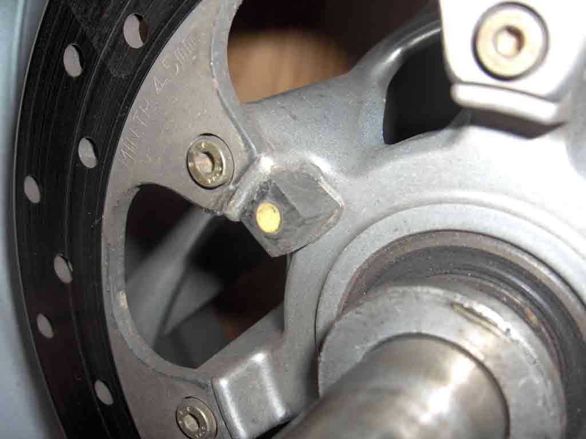
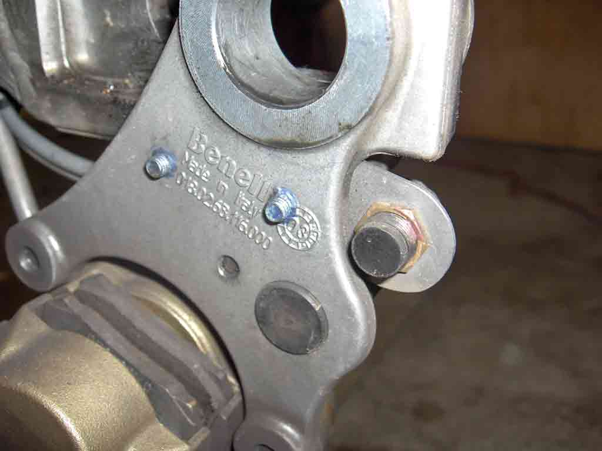
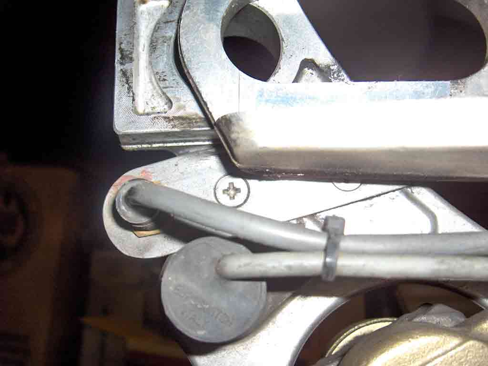
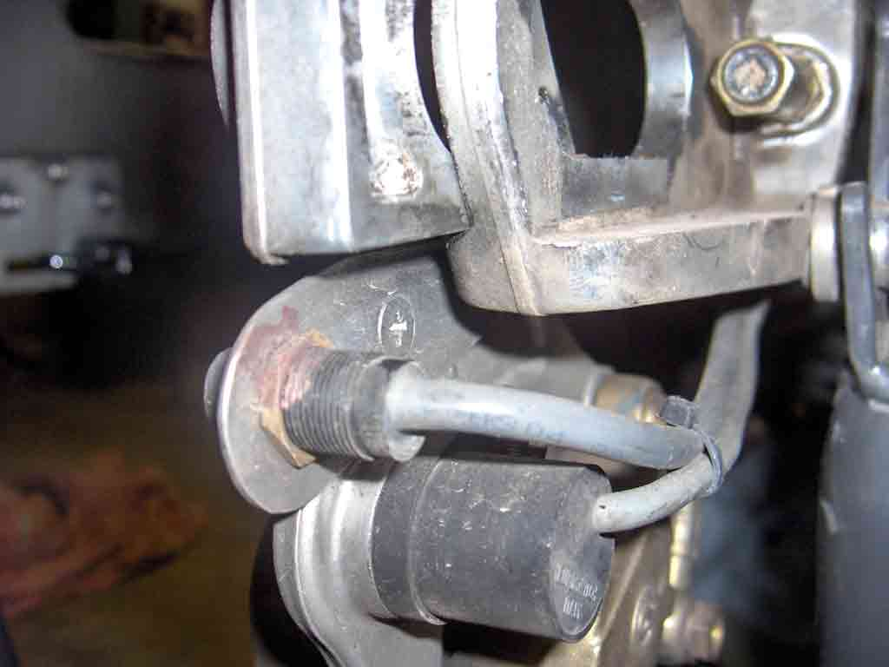
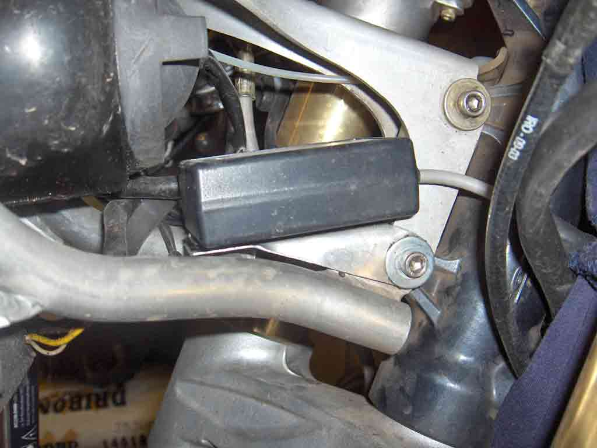
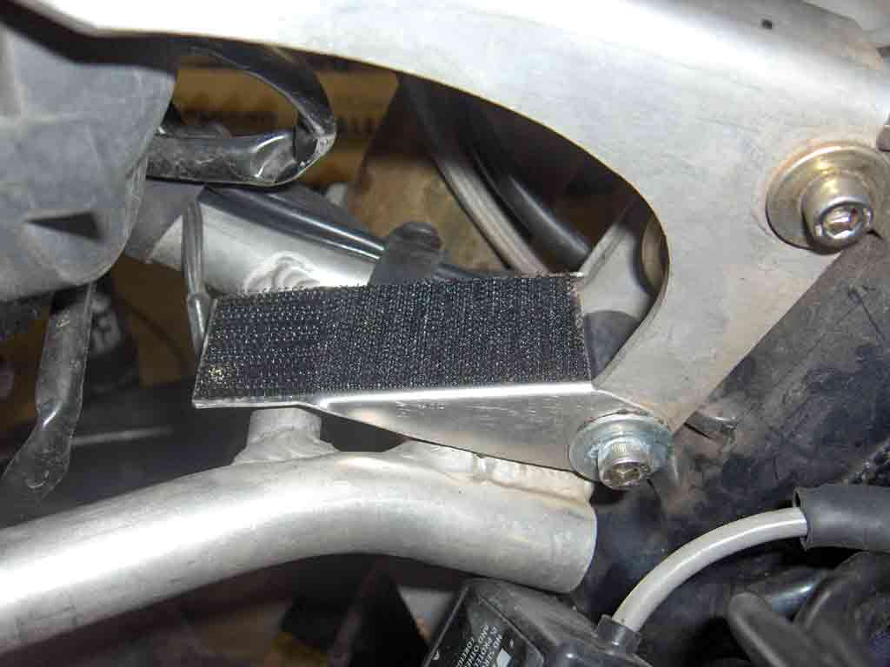
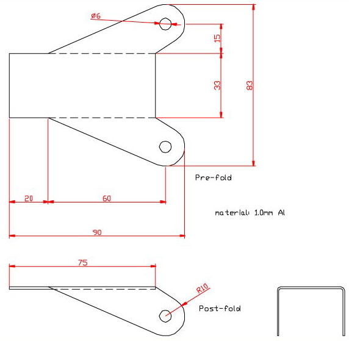

How to Fit a Sportvue MC1 Mead Mounted Display
(18 Dec 07)
SportVue and it's parent, Motion Research, don't appear to be in business anymore. While the SportVue
website is still active, they have not responded to any of my emails, or those of the local distributer,
4U2C, in The Land of the Long White Cloud.
My advice, is to contact them before commiting yourself.
The MC1 head mounted display (HMD) is available from
Sportvue
Mounting the HMD
The helmet mounting method that comes with the kit, is fairly comprehensive. Perhaps one word of warning ..
test the position of the HMD before you fix it permanently. The display is quite sensitive to helmet position.
If the helmet can move on your head, the display will move in & out of view. The position on the curve of the
visor is very important for the same reason. The ideal position is directly in front of, and above, your
dominant eye, but this may not work if the curve of the visor is such that the display floats off centre. So
experiment before you take the plunge.
Mounting the Motorcycle Sending Unit
The MSU picks up the data from the speed & rpm sensors, and sends it to the HMD by RF link. There are quite
good installation instructions that come with the kit, and bike specific instruction available on their
website. Unfortunately, nothing for the Benelli though. The following will show how I fit the MSU to my
Tornado 900.

Magnet glued into a PVC block, which is in turn glued to the rear wheel |

Inside view of the sensor bracket |

Outside view of the sensor bracket |

End view of the sensor bracket |
Glue the magnet (yellow mark towards the sensor) to the wheel with high strength epoxy.
The sensor bracket is made from 1mm Aluminium. The brake caliper hanger is tapped M5 in 2 places, and the
bracket screws directly to it. There is very little space available, so countersunk screws were used. I don't
have a drawing of the bracket, but it is tapered slightly, and the top edge is rolled over nearly 90 degrees
to give it extra sideways strength. Don't let that edge foul on the swingarm.

The MSU shown mounted to the front frame tubes |

MSU fixes to the bracket with velcor |

MSU Bracket Drawing
To accomodate the extra 2mm of the bracket, the front frame bolt was changed to one 5mm longer.
Electrical Connections
I made no effort to connect the rpm sensor, as I was not interested in the tacho or gear position displays.
If someone would like to post this info on the Benelliforum, I'll copy it here, duly acknowledged, of course.
Use
One interesting feature of my helmet / HMD combination, is that the wind moves my helmet, or perhaps the HMD
itself, such that the display wanders down & into an area where the internal mirror is not so flat, distorting
the characters. I haven't found a solution to that problem yet, but it only begins to appear above 140kph, or
there-abouts.
Future plans
The possibilities are endless, but may include warning displays for indicators, overheating, low coolant and low
oil pressure. Sportvue have a development system available to add these refinements. Mine is due any day now.